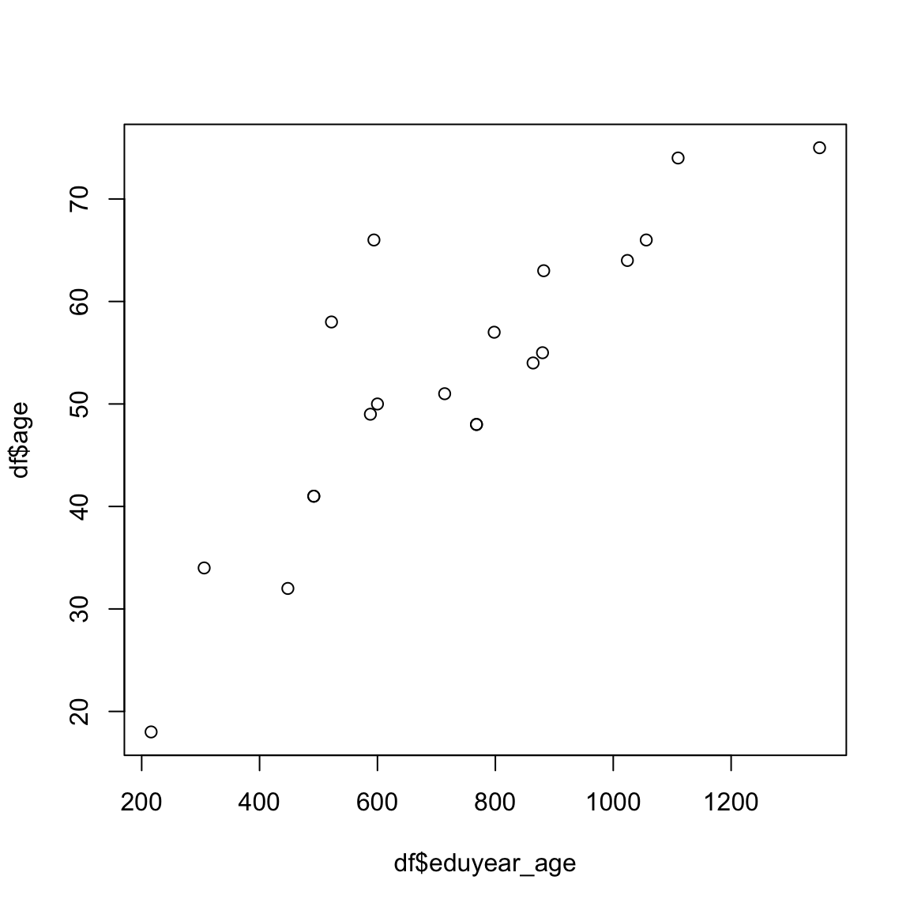
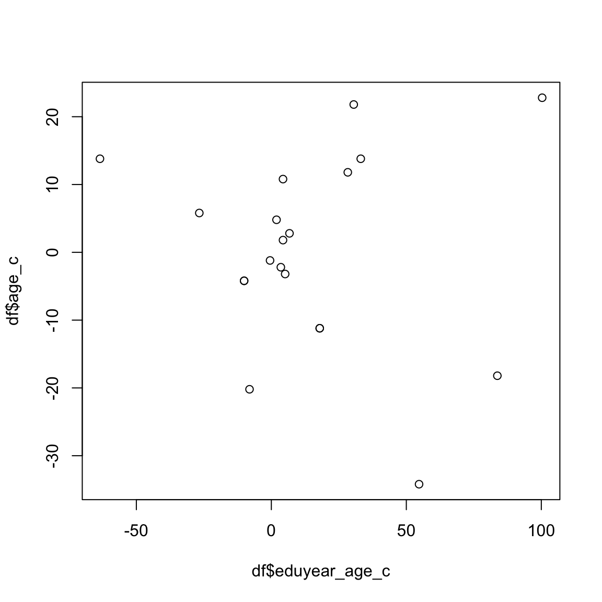

pacman::p_load(
tidyverse, # 強力なデータ操作パッケージ
stargazer # 分析結果の作表
)
df <- read_csv("data/chap12.csv", show_col_types = FALSE)10日目 : ダミー変数の利用と交互作用項
カテゴリー変数を独立変数とした回帰分析を行う場合，カテゴリー変数をダミー変数(dummy variable)に変換して分析を行います。 ダミー変数は，カテゴリー変数を0と1の値を取る変数に変換したものです。 たとえば，性別を男性と女性の2つのカテゴリーに分ける場合，男性を1，女性を0とすることでダミー変数を作成します。
\begin{aligned} D_i = \begin{cases} 1 & \text{iが男性} \\ 0 & \text{iが女性} \end{cases} \end{aligned}
テキストを参考に，職業威信スコアに与える影響の分析に性別の影響を組み込むために，男性ダミー変数をモデルに組み込みます。
y_i = \alpha + \beta _1 \text{年齢}_i + \beta _2 \text{教育年数}_i + \beta _3 \text{男性ダミー}_i + \varepsilon_i ここで，男性ダミー変数は，男性なら1，そうでないなら0という値とる変数です。 ある観測値 i の性別が男性か女性かにより次のように場合分けできます。
\begin{aligned} \text{男性 : } y_i &= \alpha + \beta _1 \text{年齢}_i + \beta _2 \text{教育年数}_i + \beta _3 \times 1+ \varepsilon_i\\ &= (\alpha + \beta _3) + \beta _1 \text{年齢}_i + \beta _2 \text{教育年数}_i + \varepsilon_i\\ \text{女性 : } y_i &= \alpha + \beta _1 \text{年齢}_i + \beta _2 \text{教育年数}_i + \varepsilon_i \end{aligned}
つまり，男性ダミーの回帰係数 \beta_3 がゼロであるという帰無仮説が統計的検定によって棄却されるのであれば、回帰直線の切片は \alpha + \beta_3 となり， 女性の回帰直線の切片 \alpha とは \beta_3 だけ差があることになります。 つまり性別の違いを \beta_3 が示しているといえます。
データ分析
では実際にデータを用いて分析してみましょう。 ここでは，教科書のデータchap12.csvを用います。 まずはpacman::p_load()関数で必要なパッケージを導入します。
stargazerは回帰分析の結果をいい感じの表にしてくれる便利なパッケージです。
次に，csvファイルを読み込むために，tidyverseのreadrパッケージのread_csv()関数を用います。
chap12.csvを格納したオブジェクトdfの中身を確認してみましょう。
glimpse(df)Rows: 20
Columns: 6
$ ID <dbl> 1, 2, 3, 4, 5, 6, 7, 8, 9, 10, 11, 12, 13, 14, 15, 16, 17, 18,…
$ age <dbl> 57, 49, 50, 74, 48, 63, 66, 32, 18, 41, 34, 64, 75, 48, 41, 51…
$ gender <chr> "Male", "Female", "Male", "Female", "Female", "Male", "Male", …
$ eduyear <dbl> 14, 12, 12, 15, 16, 14, 16, 14, 12, 12, 9, 16, 18, 16, 12, 14,…
$ tv <dbl> 2, 2, 2, 2, 3, 3, 2, 3, 2, 2, 4, 2, 1, 3, 2, 3, 2, 2, 3, 3
$ like <dbl> 93, 47, 83, 42, 35, 66, 95, 43, 63, 80, 23, 97, 85, 67, 81, 66…ID，age，gender，eduyear，tv，likeという6つの変数からなるデータが読み込まれました。 このうちgenderは<chr>となっていることから文字列となっており，残りの変数は<dbl>なので実数値が入っていることが分かります。 このデータを用いて，上記の回帰モデルを最小二乗法(OLS)で推定します。
OLS推定を行うには基本関数であるlm()関数を用います。 lm()関数は主要な引数として、
-
formula: 回帰式を指定します。y ~ x1 + x2 + ...のように指定します。 -
data: データフレームを指定します。
よって回帰式をOLS推定するには次のように記述します。
Call:
lm(formula = like ~ age + gender + eduyear + tv, data = df)
Residuals:
Min 1Q Median 3Q Max
-9.689 -5.541 -1.133 6.063 12.027
Coefficients:
Estimate Std. Error t value Pr(>|t|)
(Intercept) 76.8260 15.3224 5.014 0.000154 ***
age -0.2242 0.1289 -1.739 0.102467
genderMale 33.4208 3.4037 9.819 6.35e-08 ***
eduyear 1.9587 0.7525 2.603 0.019978 *
tv -18.9651 2.8470 -6.661 7.59e-06 ***
---
Signif. codes: 0 '***' 0.001 '**' 0.01 '*' 0.05 '.' 0.1 ' ' 1
Residual standard error: 7.257 on 15 degrees of freedom
Multiple R-squared: 0.9319, Adjusted R-squared: 0.9137
F-statistic: 51.32 on 4 and 15 DF, p-value: 1.415e-08交互作用を含んだ回帰分析
変数の内容と記述統計量を確認する。 その前に，変数genderはカテゴリー変数なので，factor型に変換しておく。
ID age gender eduyear tv
Min. : 1.00 Min. :18.00 Female: 8 Min. : 9.0 Min. :1.0
1st Qu.: 5.75 1st Qu.:46.25 Male :12 1st Qu.:12.0 1st Qu.:2.0
Median :10.50 Median :52.50 Median :14.0 Median :2.0
Mean :10.50 Mean :52.20 Mean :13.6 Mean :2.4
3rd Qu.:15.25 3rd Qu.:63.25 3rd Qu.:16.0 3rd Qu.:3.0
Max. :20.00 Max. :75.00 Max. :18.0 Max. :4.0
like
Min. :16.0
1st Qu.:46.0
Median :66.5
Mean :66.3
3rd Qu.:86.0
Max. :97.0 まずは，単独変数のみを組み入れた重回帰分析で主効果の分析を行う。つまり，次の回帰式を推定する。
like = \beta _0 + \beta _1 age + \beta _2 gender + \beta _3 eduyear + \beta _4 tv + \varepsilon
res11 <- lm(like ~ age + gender + eduyear + tv, data = df)
stargazer(res11,
digits = 2, digits.extra = 0, align = TRUE,
omit.table.layout = 'n', # IMPORTANT!!!
keep.stat = c('n', 'adj.rsq', 'f'), df = FALSE,
type = 'html'
)| Dependent variable: | |
| like | |
| age | -0.22 |
| (0.13) | |
| genderMale | 33.42*** |
| (3.40) | |
| eduyear | 1.96** |
| (0.75) | |
| tv | -18.97*** |
| (2.85) | |
| Constant | 76.83*** |
| (15.32) | |
| Observations | 20 |
| Adjusted R2 | 0.91 |
| F Statistic | 51.32*** |
変数genderの回帰係数\beta _2は統計的に正に有意であり，男性の方が女性より政治家好感度が高いことが分かる。
中心化
次に，交互作用項を組み込んだ分析を行うが，交互作用項を含む変数を回帰モデルに組み込む場合，多重共線性の影響がでる可能性があるため，連続変数を中心化する。 つまり，連続変数からその平均値を差し引くことでデータの平均を0にする。
例えば，年齢と教育年数の交互作用項をモデルに組み込むことを考える。 まず，中心化する前のデータを用いて年齢と教育年数の交互作用項と年齢の散布図を書いてみる。
df$eduyear_age <- df$eduyear * df$age
plot(df$eduyear_age,df$age)
cor(df$eduyear_age,df$age)[1] 0.8628718年齢と年齢\times教育年数の相関係数は非常に高く，この両方の変数を独立変数として組み込んだ重回帰分析では多重共線性の可能性がでてくる。
次に，両方の変数を中心化したケースで散布図を書いてみる。
df$eduyear_age_c <- df$eduyear_c * df$age_c
plot(df$eduyear_age_c,df$age_c)
cor(df$eduyear_age_c,df$age_c)[1] -0.07864727中心化した変数で回帰分析を再度実行してみる。
res11c <- lm(like ~ age_c + gender + eduyear_c + tv_c, data = df)
stargazer(res11c,
digits = 2, digits.extra = 0, align = TRUE,
omit.table.layout = 'n', # IMPORTANT!!!
keep.stat = c('n', 'adj.rsq', 'f'), df = FALSE,
type = 'html',style='aer'
)| like | |
| age_c | -0.22 |
| (0.13) | |
| genderMale | 33.42*** |
| (3.40) | |
| eduyear_c | 1.96** |
| (0.75) | |
| tv_c | -18.97*** |
| (2.85) | |
| Constant | 46.25*** |
| (2.61) | |
| Observations | 20 |
| Adjusted R2 | 0.91 |
| F Statistic | 51.32*** |
2つの結果を比較してみる。 結果が異なっているのは，切片の項だけですね。
交互効果
交互効果とは，2変数以上の変数を組み合わせた効果をいう。
like = \beta _0 + \beta _1 age + \beta _2 gender + \beta _3 eduyear + \beta _4 tv + \beta_5 gender \times age + \varepsilon
さらに交互作用項を追加したモデル
like = \beta _0 + \beta _1 age + \beta _2 gender + \beta _3 eduyear + \beta _4 tv + \beta_5 gender \times age + \beta_6 gender \times eduyear + \varepsilon と
res12 <- lm(like ~ age_c + gender + eduyear_c + tv_c + gender:age_c, data = df)
res13 <- lm(like ~ age_c + gender + eduyear_c + tv_c + gender:age_c + gender:eduyear_c, data = df)
stargazer(res11c,res12,res13,
digits = 2, digits.extra = 0, align = TRUE,
omit.table.layout = 'n', # IMPORTANT!!!
keep.stat = c('n', 'adj.rsq', 'f'), df = FALSE,
type = 'html',style='aer'
)| like | |||
| (1) | (2) | (3) | |
| age_c | -0.22 | -0.43*** | -0.45*** |
| (0.13) | (0.12) | (0.12) | |
| genderMale | 33.42*** | 32.50*** | 32.53*** |
| (3.40) | (2.65) | (2.72) | |
| eduyear_c | 1.96** | 1.87*** | 2.20** |
| (0.75) | (0.58) | (0.85) | |
| tv_c | -18.97*** | -21.21*** | -20.92*** |
| (2.85) | (2.30) | (2.42) | |
| age_c:genderMale | 0.76*** | 0.78*** | |
| (0.23) | (0.24) | ||
| genderMale:eduyear_c | -0.61 | ||
| (1.11) | |||
| Constant | 46.25*** | 45.68*** | 45.74*** |
| (2.61) | (2.03) | (2.08) | |
| Observations | 20 | 20 | 20 |
| Adjusted R2 | 0.91 | 0.95 | 0.95 |
| F Statistic | 51.32*** | 70.79*** | 56.10*** |